PYTHONの勉強のために作成したアプリケーションを公開してみました。
今回は、データを取得した後の、データ分析の方法について解説します。
①をまだ見ていない方は、先に使い方①を確認してください
➤使い方①データ取得の方法はこちら
1.店舗を選択する
台データダイアログを開きます。(一番最初に開く画面)
店舗と機種を指定すると、データを閲覧できます。
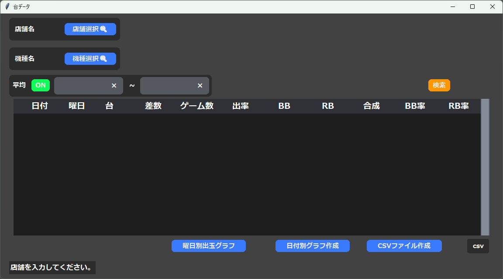
店舗選択ボタンを押下します。
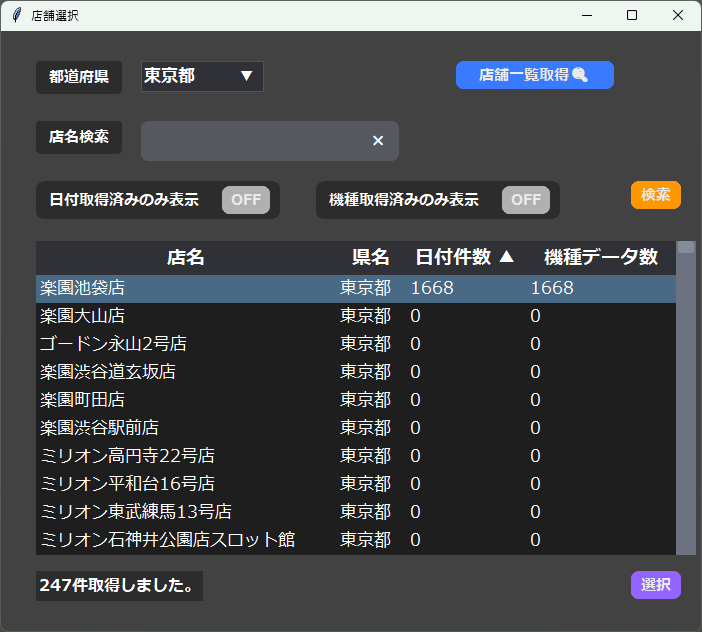
目的の店舗をクリックし、選択ボタンを押下します。
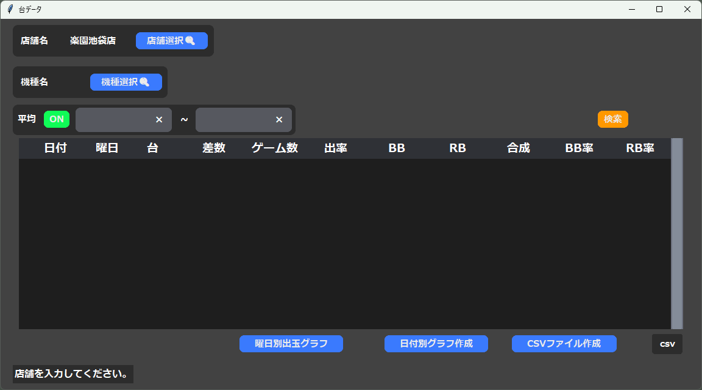
台データ画面の店舗名に値が入ったのが確認できます。
2.機種を選択する
機種選択ボタンを押下します。
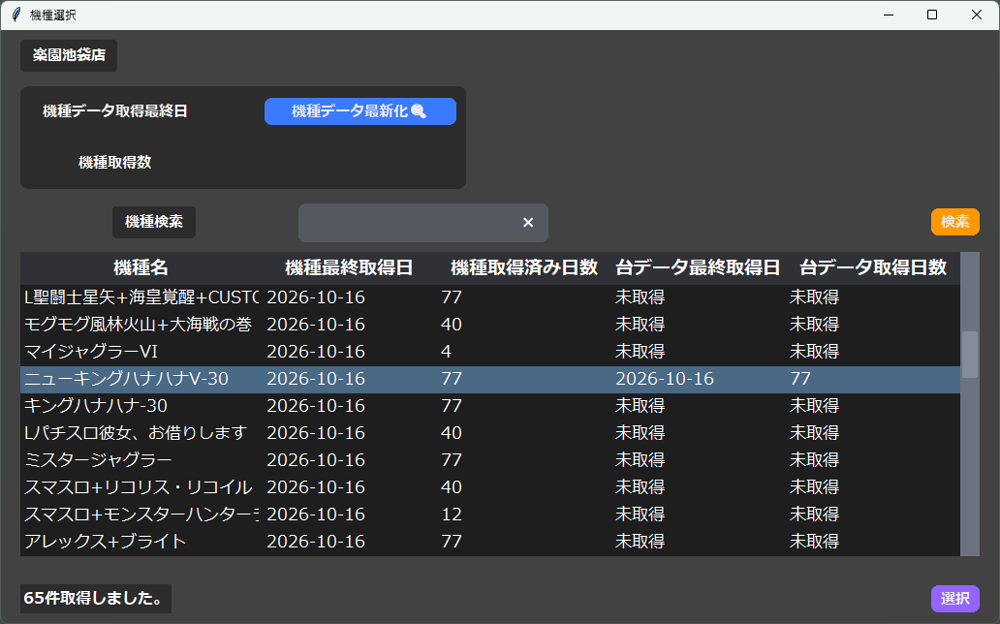
目的の機種をクリックし、選択ボタンを押下します。
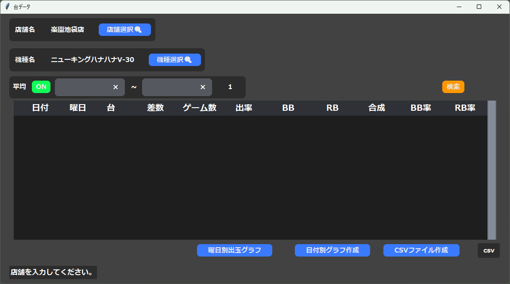
台データ画面の機種名に値が入ったのが確認できます。
2.データ閲覧
検索ボタンを押下すると、日付順に結果が出力されます。
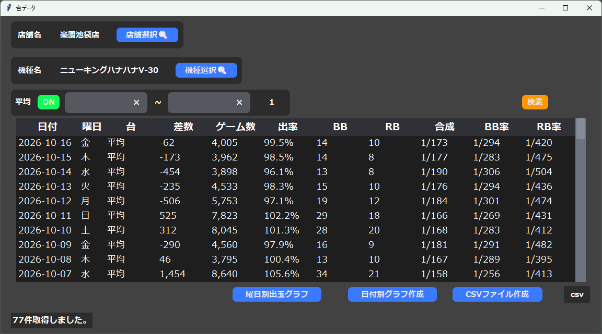
台の列が、平均となっていて、その日の平均のデータを出力していることがわかります。
台ごとのデータを出力するには、平均をOFFにします。
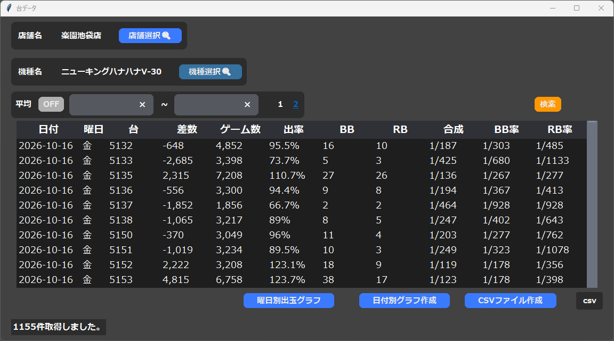
1155件出力しましたが、テーブルは1000件ごとに表示するので、それ以降のデータを見たいときはページリンクをクリックし、ページを更新する必要があります。
日付で絞りたいときは、テキストボックスに半角8桁の数字(yyyymmdd)を入力します。
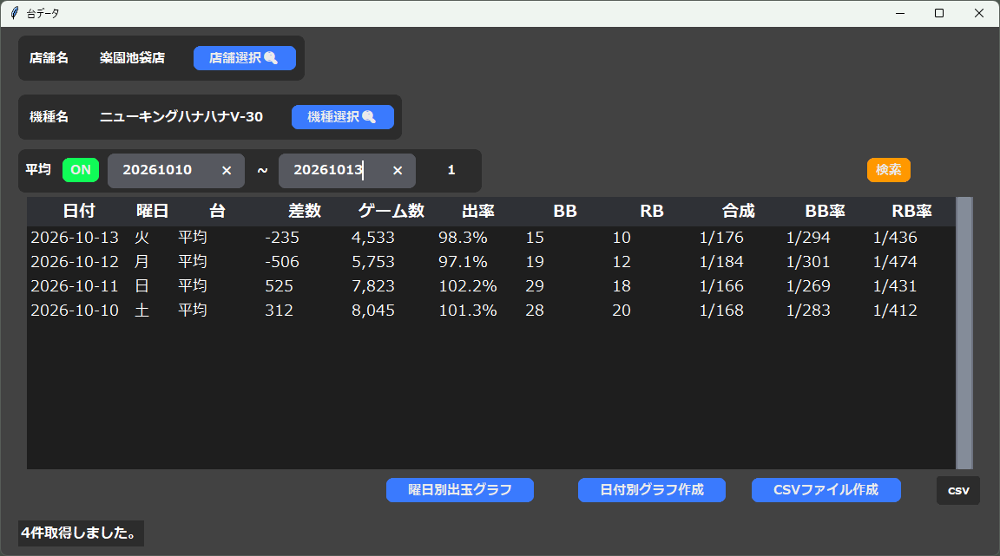
3.データ分析
曜日別の差枚の成績のグラフと、日付別の成績のグラフを作成しました。
それぞれ曜日別出玉グラフ作成ボタン、日付別グラフ作成ボタンをクリック
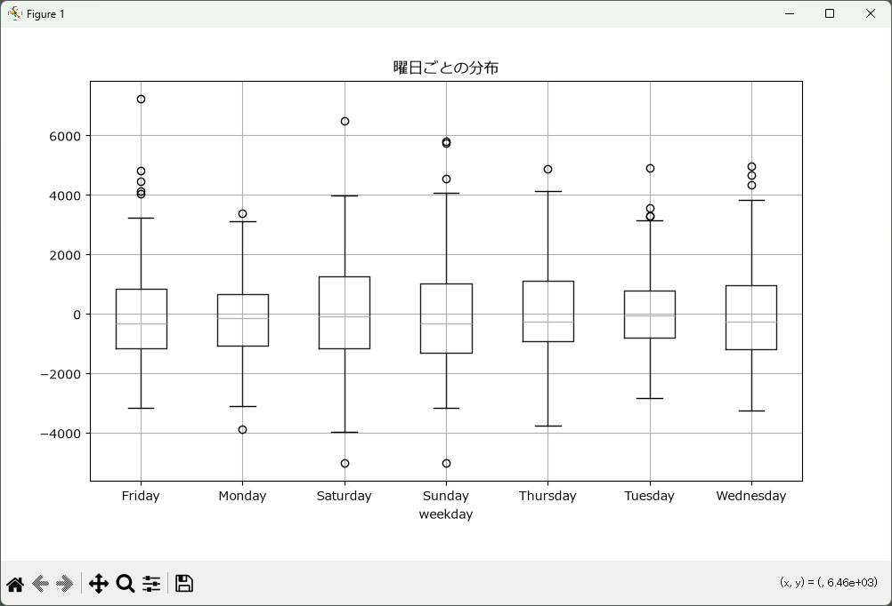
↑曜日別成績
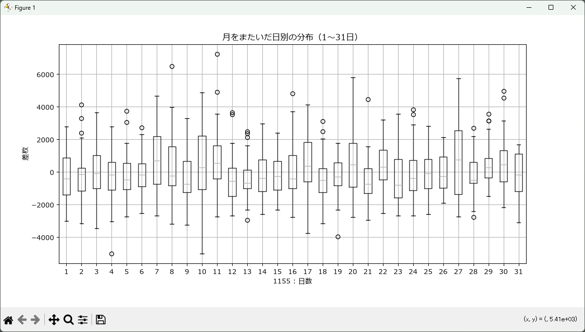
↑日付別成績
２か月程度のデータでは、あまり意味がなさそうですね。
4.CSV出力
スロットのデータを解析したい人は、これが一番効率化したいのではないでしょうか。
CSVファイル作成ボタンを押下するとCSVファイルを作成し、csvをクリックすると、自動で開きます。
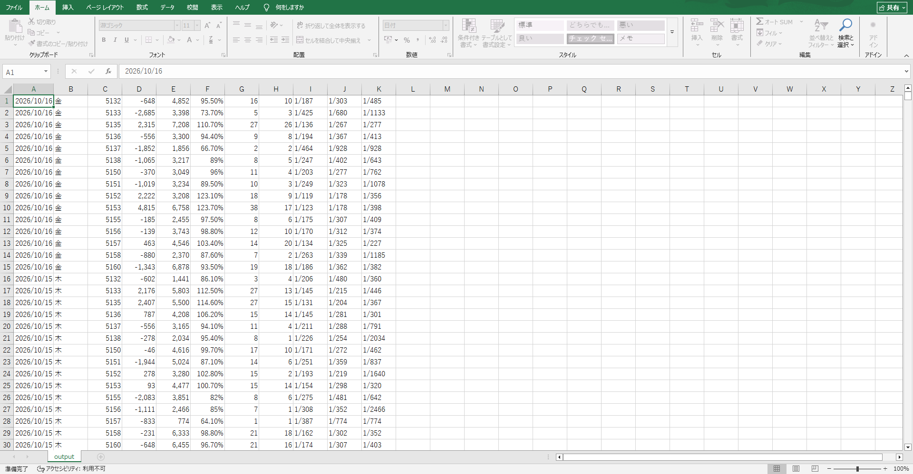
エクセルが入っている人は、デフォルトでExcelが起動すると思います。
以上がこのアプリケーションの使い方になります。
スクレイピングを行う秒間隔、ブラウザ数にはDOS攻撃にならないよう注意が必要です。
作成者はスロットについてあまり詳しくないので、データの分析方法を知りません。
「この列のグラフを作る機能をつけ足してくれ！」などの要望あれば、なるべくアップデートしていきたいと思っています。